🧙♂ Fantasía y aventura – Historias con elementos mágicos y misteriosos, situadas en un mundo lleno de magia, sabiduría ancestral y simbolismo.
🌟 Valores positivos – Fomenta el autoconocimiento, la superación personal y el equilibrio emocional. Destaca la importancia de cuidar la mente y fomentar pensamientos positivos.
💭 Reflexión y aprendizaje – Mensajes sobre la importancia del lenguaje y la percepción en nuestra vida. Promueve el cambio interno como medio para transformar la realidad exterior.
✍ Ejercicios de autoconocimiento – Actividades para explorar emociones y reflexionar sobre pensamientos limitantes. Anima a los lectores a interpretar sus propias historias y buscar su bienestar interior.
Dramatis Personae
Los Guardianes y los Habitantes del Valle
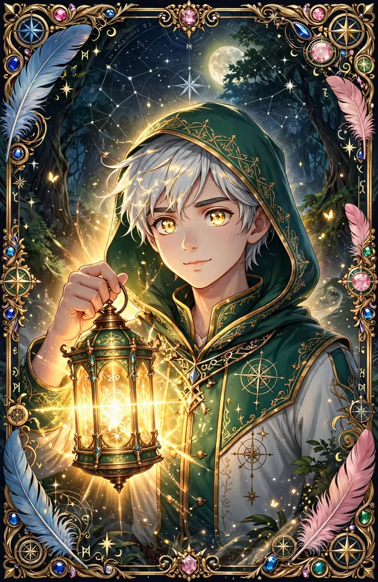
Liam — El Portador de Claridad
Guardián · Portador de Luz
Guardián del Templo. Su lámpara mágica emite una luz brillante que ilumina el camino en la más densa oscuridad. Simboliza la claridad, el propósito y la razón que guía hacia el verdadero norte.
Elara — La Tejedora de Historias
Guardiana · Tejedora de Historias
Guardiana del Lenguaje. Su lámpara transforma sombras en narraciones llenas de sabiduría. Simboliza el poder de la interpretación, la intuición y la creación de nuevas realidades a través de las palabras.
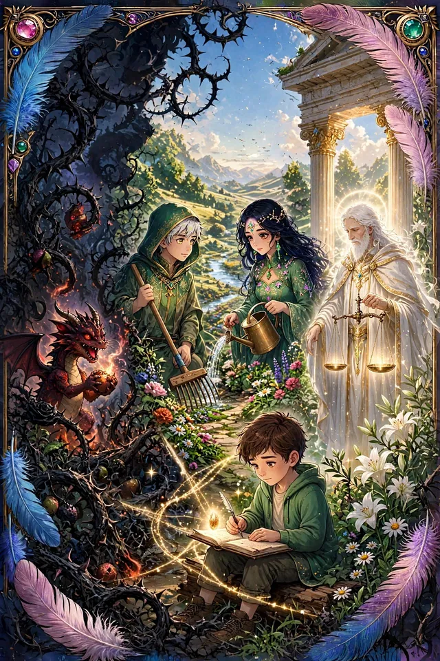
Aides — El Joven Jardinero
Protagonista · Buscador
Protagonista de la fábula. Vive en un valle fértil con un jardín mental grande pero descuidado, lleno de potencial y de maleza heredada. Su viaje representa el de todo buscador que decide hacerse responsable de su propio jardín interior.
Callum — El Sabio del Valle
Mentor · Guía Terapéutica
Guía y figura terapéutica. Vive en una cabaña rodeada de un paraíso de flores y hierbas fragantes. Con té de hierbas y sabiduría profunda, enseña que las afirmaciones son plantas y los juicios son semillas. Representa el mentor que refleja nuestra sabiduría interior.
Liam y Elara se encontraban en la cima de la colina, donde el templo resplandecía bajo la luz del amanecer. Era el momento perfecto para abrir el Gran Libro de Fábulas y dejar que sus historias transformadoras iluminaran sus corazones y mentes. El día anterior, al descubrir el compás dorado, habían aprendido que las palabras no eran solo vehículos de información, sino portadoras de transformación personal.
“Elara, hoy compartamos con nuestro pueblo la historia del jardín de la mente,” sugirió Liam mientras desplegaba las páginas del libro con cuidado. Su lámpara iluminaba suavemente el texto, mientras la luz de la de Elara proyectaba formas en movimiento que narraban la historia con un baile de sombras.
Apertura — En la cima de la colina, la luz del amanecer revela el Gran Libro de Fábulas entre Liam y Elara.
I
Relato
Había una vez un joven llamado Aides que vivía en un valle fértil y verde, rodeado de colinas doradas y ríos cristalinos. En este valle, cada persona tenía un jardín especial que representaba su mente, un lugar donde crecían sus pensamientos, creencias y emociones. El jardín de Aides era grande y lleno de potencial, pero a menudo se encontraba descuidado y lleno de maleza.
Aides había heredado su jardín de sus antepasados, quienes habían plantado muchas de las semillas que ahora crecían en él. Algunas eran flores magníficas que llenaban el aire con fragancias de esperanza y alegría, mientras que otras eran malezas que bloqueaban la luz del sol, impidiendo que las flores crecieran fuertes y sanas.
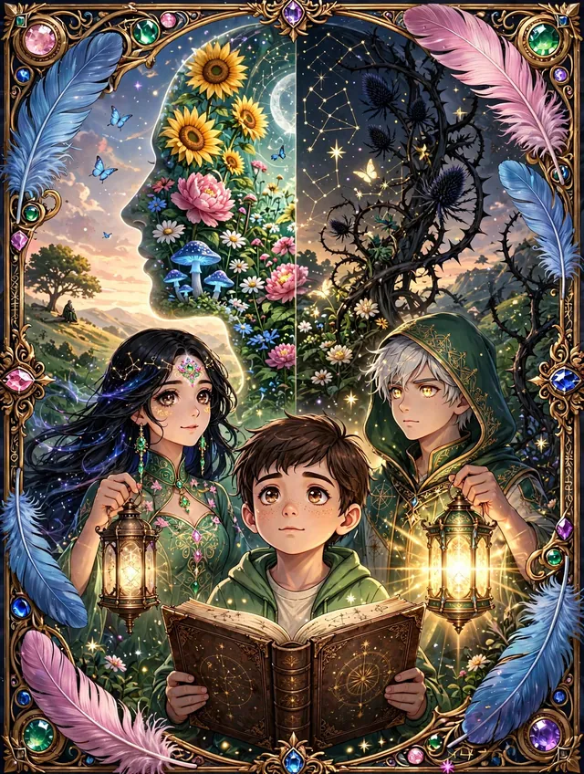
El jardín heredado — Grande en potencial, descuidado en su presente, cubierto de maleza.
Un día, mientras paseaba por su jardín, Aides se detuvo a observar la maraña de plantas que cubría el terreno. Había zarzas de miedos, enredaderas de dudas y arbustos espinosos de resentimiento que ahogaban las flores de sus sueños y aspiraciones. Sentía que su mente estaba llena de pensamientos negativos y emociones estancadas, y sabía que algo debía cambiar.
La observación — Zarzas de miedo y enredaderas de duda ahogan las flores del sueño.
Decidido a transformar su jardín, Aides buscó el consejo de Callum, el sabio del valle, un anciano conocido por su profunda sabiduría y capacidad para ver más allá de las apariencias superficiales. Callum vivía en una cabaña en el borde del valle, rodeado por su propio jardín, un paraíso de coloridas flores y fragantes hierbas.
“Sabio Callum,” preguntó Aides al llegar a la cabaña del anciano, “¿cómo puedo transformar mi jardín en un lugar de belleza y serenidad?”
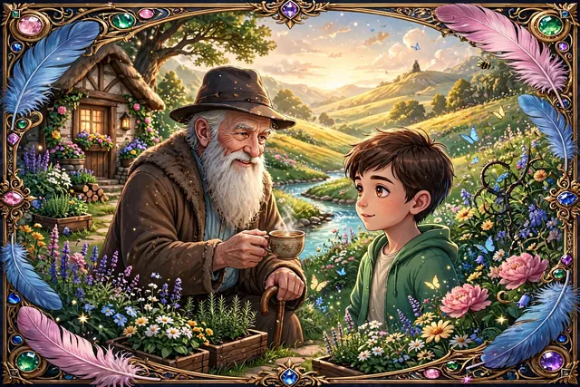
El encuentro — Callum, el sabio del valle, y su jardín de flores y hierbas fragantes.
Callum sonrió y le ofreció una taza de té de hierbas. “Imagina que tu mente es un jardín,” comenzó. “Las afirmaciones son como las plantas que ya están ahí, visibles y tangibles. Los juicios son como las semillas; algunas pueden florecer en hermosas flores, mientras que otras pueden convertirse en maleza. Tu tarea es identificar y cuidar las semillas que realmente deseas cultivar.”
Aides escuchó atentamente mientras Callum continuaba, “Los pensamientos positivos y las creencias fortalecedoras son como semillas de flores que puedes plantar intencionalmente. Dedica tiempo cada día a regar y nutrir estas semillas con amor y atención. También es importante arrancar las malas hierbas: esos juicios y creencias que limitan tu crecimiento.”
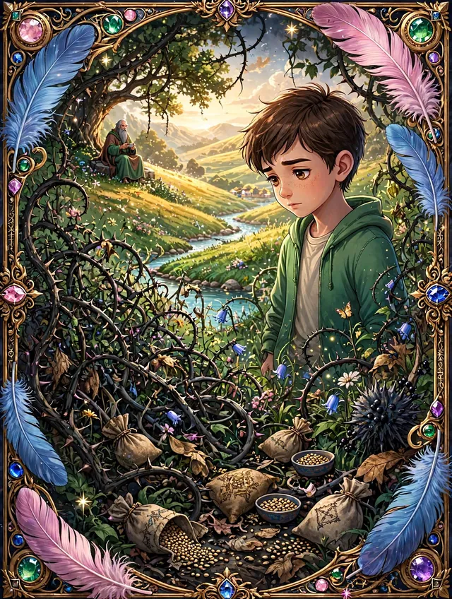
La enseñanza — Afirmaciones como plantas visibles, juicios como semillas por elegir.
El joven asintió, comprendiendo que el cambio comenzaba desde dentro. Decidido a transformar su jardín mental, regresó a su hogar con una nueva determinación. Aides empezó a pasar más tiempo en su jardín, arrancando las malas hierbas del miedo, podando las enredaderas de la duda y plantando nuevas semillas de confianza y gratitud. Día a día, dedicaba tiempo a reflexionar sobre sus pensamientos, reemplazando aquellos que lo limitaban con afirmaciones positivas y constructivas.
La siembra interior — Reemplazar lo que limita con afirmaciones que nutren.
Mientras trabajaba, Aides se dio cuenta de que su jardín era un reflejo de su vida interior. Al eliminar las malas hierbas y cuidar las plantas saludables, comenzó a sentir una paz interior que antes le era desconocida. La transformación del jardín fue lenta pero constante, y con el tiempo, se convirtió en un lugar de belleza y serenidad, un refugio donde podía encontrar claridad y propósito.
“Recuerda, Aides,” le había dicho Callum en su última visita, “el jardín de la mente necesita cuidado constante. No puedes dejar que las malezas vuelvan a crecer, porque si lo haces, pronto cubrirán tus flores de nuevo. Debes estar atento y cultivar con amor lo que realmente deseas ver florecer en tu vida.”
Cuidado constante — La noche guarda cuencos de semillas oscuras y doradas.
A medida que el jardín de Aides florecía, también lo hacía su vida. Comenzó a atraer nuevas oportunidades y amistades, y se convirtió en una fuente de inspiración para otros en el valle. Las personas acudían a él en busca de consejo, y Aides compartía con ellos la sabiduría que había aprendido de Callum y de su propia experiencia.
Florecer — El jardín transformado se vuelve fuente para todo el valle.
La historia de Aides y su jardín mental resonó profundamente en los corazones de Liam y Elara, quienes vieron en ella una poderosa metáfora para el crecimiento personal y el cambio. Sabían que compartiendo esta historia con su pueblo, podrían ayudar a sus vecinos a emprender su propio viaje de transformación.
Liam cerró el libro con reverencia, observando cómo los rayos del sol comenzaban a dispersar las sombras del templo. “Esta historia nos recuerda que nuestras mentes son un terreno fértil para el crecimiento,” reflexionó. “Nos enseña a ser conscientes de qué semillas elegimos cultivar y qué malas hierbas debemos eliminar.”
Elara, iluminada por la historia, añadió: “Cada uno de nosotros tiene el poder de transformar su propio jardín mental. Las palabras y pensamientos que elegimos son herramientas poderosas que pueden moldear nuestra realidad y definir quiénes somos.”
Con esta historia, Liam y Elara decidieron llevar la lección al pueblo, invitando a sus habitantes a reflexionar sobre sus propios jardines mentales y a sembrar intencionadamente semillas de cambio positivo. A través de las palabras del Gran Libro de Fábulas, los guardianes comenzaron a tejer un tapiz de transformación personal, donde cada historia revelaba una nueva posibilidad y un camino hacia la sabiduría y el autodescubrimiento. Y así, el viaje de Liam y Elara continuó, guiando a su pueblo en un viaje de autoconocimiento y crecimiento, iluminando el camino hacia un futuro lleno de esperanza y potencial ilimitado.
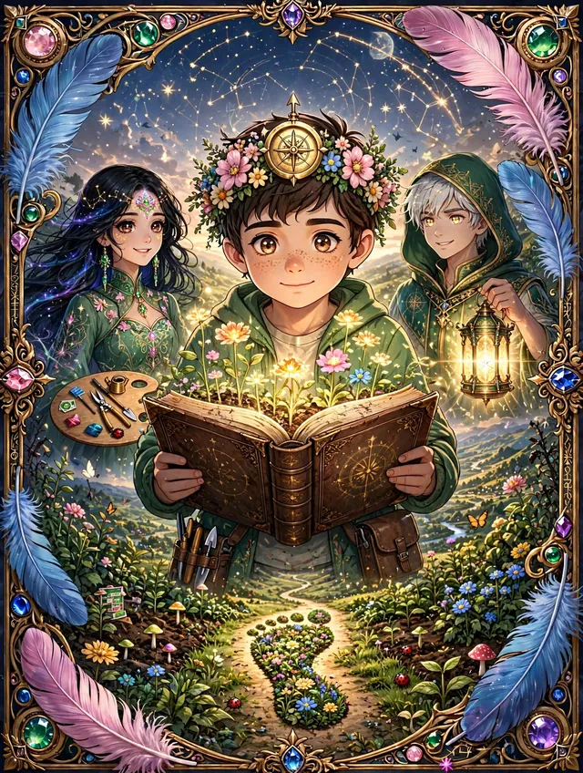
Cierre del relato — Compás, corona floral y libro floreciente iluminan el camino.
II · Coaching Ontológico
Reflexión y Aprendizaje con Coaching
La historia de Aides y su jardín mental ofrece valiosas enseñanzas relacionadas con el Coaching, que se enfoca en la transformación personal a través de la conciencia y la reinterpretación de nuestras experiencias y creencias.
01 / 04
El Jardín de la Mente: Cultivando el Ser
El jardín de Aides simboliza la mente humana, un terreno fértil donde nuestras creencias, pensamientos y emociones crecen. En el Coaching, se entiende que lo que experimentamos y cómo actuamos está profundamente influenciado por cómo interpretamos la realidad.
Reflexión
¿Cómo está tu jardín mental? ¿Qué pensamientos y creencias están floreciendo en tu vida, y cuáles están bloqueando tu crecimiento? Identificar las “malezas” (creencias limitantes, miedos, dudas) y las “flores” (pensamientos y creencias empoderadoras) nos permite tener claridad sobre qué necesitamos cambiar en nuestra vida para seguir creciendo.
02 / 04
El Poder de las Creencias: Semillas que Crecen
La enseñanza de Callum sobre las creencias como semillas resuena con el trabajo ontológico, en el que se examinan y transforman las creencias limitantes para abrir espacio a nuevas posibilidades. Aides, al identificar las malas hierbas (juicios limitantes) y plantar semillas de confianza, gratitud y autoaceptación, genera un cambio interno que se refleja en su vida exterior.
Reflexión
¿Qué creencias tienes sobre ti mismo, sobre tu vida y sobre el mundo? ¿Te están limitando o te están empoderando? En el Coaching, nos preguntamos: ¿Qué nuevas creencias puedo sembrar en mi vida para cultivar un futuro más positivo y auténtico?
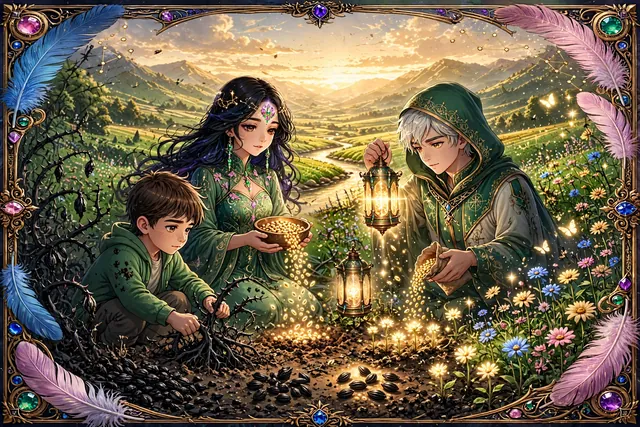
03 / 04
La Acción Consciente: Cuidar el Jardín Interior
Aides no solo identifica lo que necesita cambiar, sino que actúa de manera consistente para transformar su jardín. En el Coaching, la acción coherente con nuestras nuevas creencias es esencial para el proceso de transformación. Cambiar requiere esfuerzo, pero también compromiso con el autocuidado y el crecimiento constante.
Reflexión
¿Qué acciones concretas puedo tomar para nutrir mis pensamientos y emociones positivas? ¿Cómo puedo implementar cambios pequeños y consistentes que favorezcan mi bienestar y desarrollo? La acción consciente es clave para transformar la realidad que deseamos.
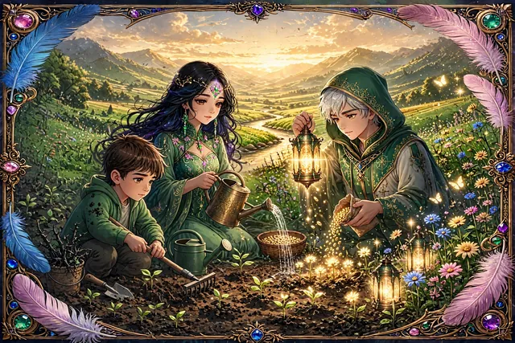
04 / 04
La Responsabilidad Personal: El Jardinero de Mi Vida
A través de la historia de Aides, entendemos que somos los responsables de lo que crece en nuestra mente y nuestra vida. El Coaching nos invita a asumir la responsabilidad plena de nuestras creencias, decisiones y acciones. Reconocer que somos los jardineros de nuestra propia existencia nos empodera para tomar decisiones alineadas con nuestra autenticidad y bienestar.
Reflexión
¿Estoy tomando plena responsabilidad de mi vida? ¿Qué áreas necesito asumir con mayor conciencia y atención? La transformación comienza cuando reconocemos que somos los responsables de cómo interpretamos la vida y, por ende, de las acciones que tomamos.
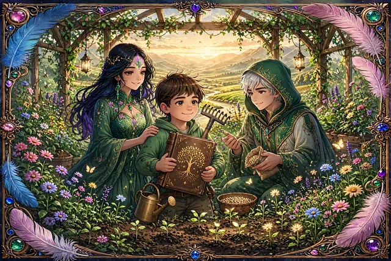
✦
“Somos los jardineros de nuestra propia existencia, llamados a cultivar con amor lo que deseamos ver florecer.”
III · Transformación Continua
La Transformación Continua: Un Viaje Sin Fin
El jardín vivo — Cada estación trae nuevas semillas y nuevas malezas por atender.
La transformación que Aides experimenta no es un evento único, sino un proceso continuo de crecimiento y autodescubrimiento. En el Coaching, entendemos que el desarrollo personal es un viaje de toda la vida. Debemos ser constantes en cuidar nuestras creencias, pensamientos y emociones, ya que siempre surgirán nuevos desafíos (nuevas malas hierbas) que necesitarán ser atendidos.
Reflexión
¿Estoy preparado para seguir creciendo y adaptándome continuamente a las nuevas circunstancias de mi vida? ¿Cómo puedo mantener mi jardín mental floreciente con atención y dedicación constantes? La transformación continua es una oportunidad para descubrir nuevas formas de ser y actuar.
IV · Prácticas
Ejercicios de Aprendizaje
Prácticas para cultivar tu jardín interior
Ejercicio 01
Identificación del Jardín Interior: Reflexiona sobre tu estado actual.
Práctica de observación interior
Ejercicio: Imagina que tu mente es un jardín. ¿Cómo está hoy? ¿Lleno de flores hermosas o se ha descuidado con maleza que impide el crecimiento? Haz una lista de tus pensamientos actuales. ¿Cuáles son las “flores” (pensamientos positivos) y cuáles son la “maleza” (pensamientos limitantes)? Observa las áreas de tu vida donde te sientes estancado, inseguro o negativo. ¿Qué emociones predominan? ¿Qué creencias limitantes están presentes? Escribe sobre esas áreas: ¿qué pensamientos o emociones emergen? ¿Son como flores que florecen o como maleza que bloquea la luz del sol?
Reflexión
¿Qué áreas de tu vida están floreciendo y cuáles necesitan atención? ¿Qué “maleza” necesitas arrancar? ¿Qué “flores” deseas que crezcan?
Ejercicio 02
Acción de Transformación: Tomar decisiones conscientes para cultivar pensamientos y emociones positivas.
Acción de Transformación — Decisiones conscientes para cultivar
Ejercicio: Como Aides, elige una “maleza” (un pensamiento o creencia limitante) y una “flor” (una creencia positiva que deseas fortalecer). Crea una lista de acciones diarias para eliminar la maleza y fomentar el crecimiento de la flor. Analiza las creencias heredadas o adoptadas a lo largo de tu vida. Algunas pueden ser limitantes, como “No soy capaz” o “Esto no es para mí”. Escribe esas creencias y evalúa cómo afectan tu vida. ¿Qué maleza representan en tu jardín mental? Identifica creencias empoderadoras, como “Tengo el poder de cambiar” o “Soy capaz de aprender”. Estas son las semillas positivas que puedes plantar.
Reflexión
¿Cómo puedes reemplazar creencias limitantes por empoderadoras? ¿Qué acción tomarás hoy para cultivar nuevas creencias?
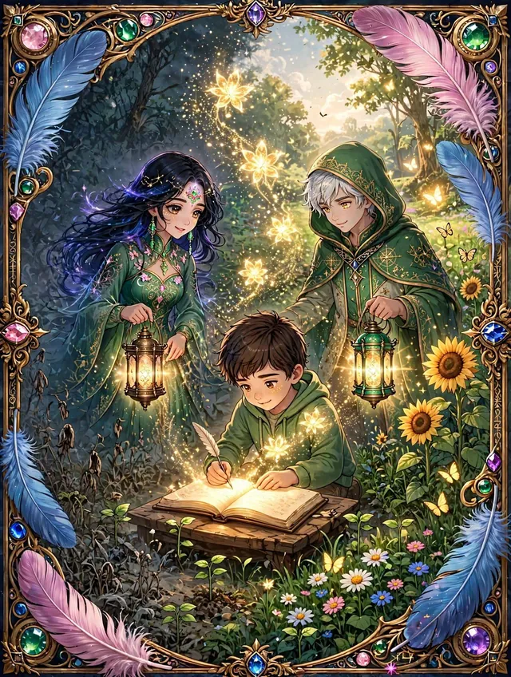
Ejercicio 03
Diario de Afirmaciones Positivas: Reemplazar pensamientos limitantes con afirmaciones de bienestar.
Ejercicio: Cada mañana, escribe tres afirmaciones alineadas con el jardín que deseas cultivar. Ejemplo: “Mi mente está llena de pensamientos positivos”, “Estoy abierto a nuevas oportunidades”, “Cultivo confianza y gratitud cada día”.
Reflexión
¿Cómo cambia tu energía cuando te enfocas en estas afirmaciones? ¿Cómo te sientes al final del día tras repetirlas?
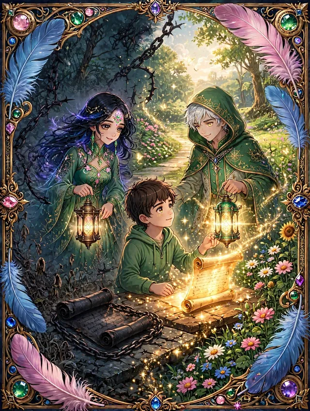
Ejercicio 04
Revisión y Desafío de Creencias: Cuestionar las creencias limitantes.
Ejercicio: Reflexiona sobre una creencia que te limita, como “No soy lo suficientemente bueno” o “No puedo cambiar”. Luego, reescribe esa creencia de forma empoderante y realista.
Reflexión
¿Cómo cambia tu perspectiva al leer la nueva creencia? ¿Qué impacto tiene en tu comportamiento diario?
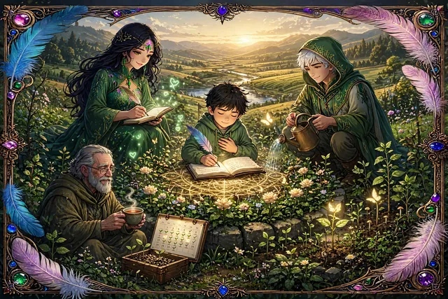
Acción consciente — Un paso pequeño cada día
Ejercicio 05
Acción Consciente para el Cambio: Tomar acciones deliberadas para cultivar pensamientos positivos.
Reflexiona sobre una acción consciente que puedas tomar para nutrir pensamientos positivos en tu vida, como escribir una afirmación diaria o practicar gratitud. Define una pequeña acción diaria que ayude a eliminar la “maleza” mental, como reemplazar pensamientos de miedo con afirmaciones de confianza. Comprométete a dar un paso hoy mismo y observa cómo tu jardín mental empieza a transformarse. ¿Cómo te sientes al tomar esta acción?
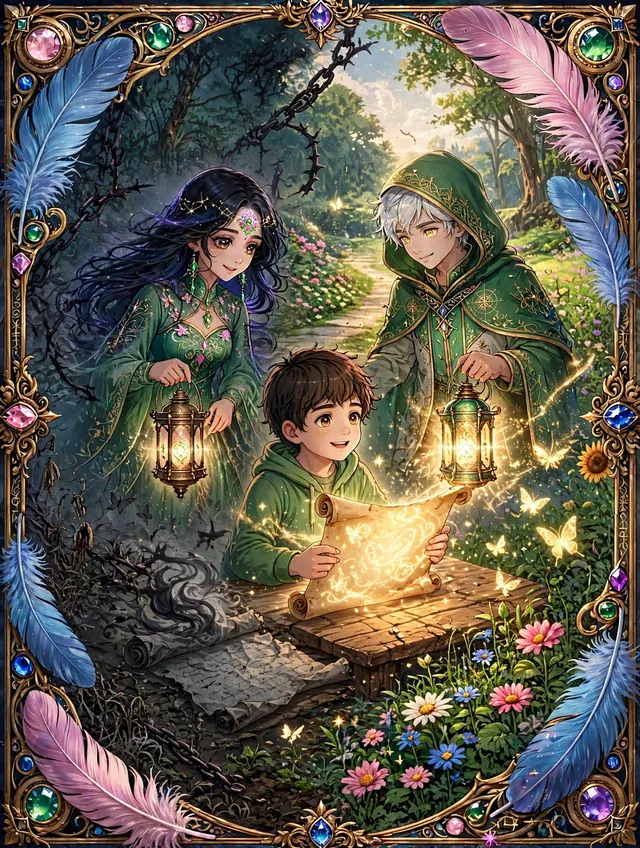
Ejercicio 06
Reescribir una Historia Limitante: Transformar una narrativa negativa en una positiva.
Reflexiona sobre un evento en tu vida en el que te sentiste limitado o fracasado. Escribe esa historia con todos los pensamientos y emociones negativas que recuerdas. Ahora, reescribe la historia desde una perspectiva de aprendizaje. ¿Qué lecciones aprendiste? ¿Cómo te ayudó a crecer? Léela en voz alta y observa cómo cambia tu percepción de esa experiencia. ¿Qué cambios percibes en tus emociones y energía?
V · Psicoanálisis
Los principios del psicoanálisis
El relato de Aides y su jardín, presentado en el Gran Libro de Fábulas, ofrece una profunda metáfora del proceso humano de autoconocimiento y transformación. A través de la historia de un personaje que se enfrenta a un jardín descuidado y desordenado, el relato puede ser interpretado como un paralelo con diversos conceptos fundamentales de la psicología, especialmente desde la perspectiva del psicoanálisis freudiano y la psicología analítica de Jung.
01 / 05
El Inconsciente y los Deseos Reprimidos
En la narración, Aides se enfrenta a un jardín cubierto de maleza y caos, un reflejo de una mente que ha sido desatendida y ha acumulado aspectos reprimidos. La maleza, como símbolo de pensamientos y deseos reprimidos, representa el inconsciente de Aides, esa parte de la psique que está oculta a la conciencia y que contiene emociones, recuerdos y deseos no resueltos.
Según Freud, el inconsciente alberga estos deseos reprimidos debido a los conflictos con las normas sociales o la incapacidad del ego para aceptarlos. El trabajo de Aides en el jardín—limpiarlo y organizarlo—es una representación simbólica del proceso de traer estos deseos reprimidos a la conciencia. A medida que Aides elimina la maleza, también está derribando barreras psicológicas que le impiden alcanzar una mayor claridad y equilibrio mental. Este proceso refleja cómo el trabajo terapéutico permite que los contenidos reprimidos salgan a la superficie, para ser comprendidos y gestionados adecuadamente.
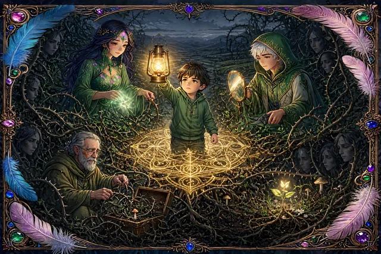
Maleza como símbolo — Lo reprimido oculto a la conciencia.
02 / 05
El Proceso de Individuación
Desde la perspectiva de Carl Jung, el proceso de individuación es el camino hacia el desarrollo integral de la personalidad, donde el individuo toma conciencia de sus aspectos inconscientes y los integra de manera armónica en su vida consciente. En este relato, Aides emprende un viaje similar al proceso de individuación, al enfrentarse con las partes descuidadas y desordenadas de su psique representadas por el jardín.
El jardín, en su caos y desorden, simboliza los aspectos no reconocidos de la psique de Aides, esos elementos que él ha ignorado o no ha sabido cómo manejar. A través del proceso de restauración, Aides va aprendiendo a integrar estas partes dispersas de sí mismo, alcanzando una mayor conciencia y equilibrio. Al hacerlo, comienza a completar su ser, realizando un proceso de individuación donde la integración de lo consciente e inconsciente se convierte en la clave para su autocomprensión.
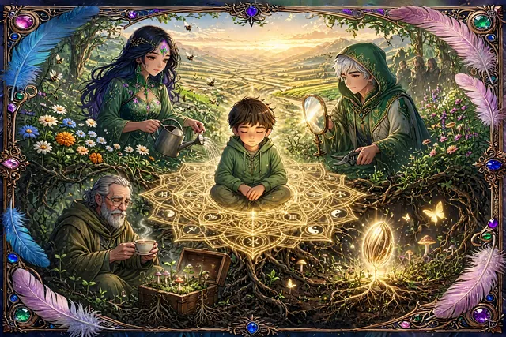
Integración — Lo disperso de la psique hacia la totalidad.
03 / 05
La Transferencia y el Rol del Terapeuta
En el relato, Callum, quien asume el rol de guía de Aides, puede ser interpretado como una figura terapéutica. En la teoría psicoanalítica, la transferencia es el proceso en el que un paciente proyecta sobre el terapeuta emociones, deseos y patrones del pasado. Callum, con su conocimiento y sabiduría, actúa como una figura confiable que permite a Aides expresar y procesar sus propios conflictos internos.
A través de la relación con Callum, Aides comienza a descubrir aspectos reprimidos de su psique que ahora deben ser aceptados y trabajados. En este contexto, el terapeuta no solo sirve como guía, sino como espejo de la psique del paciente, permitiendo que se revele la transferencia de sentimientos y emociones inconscientes para que puedan ser transformados y reinterpretados.
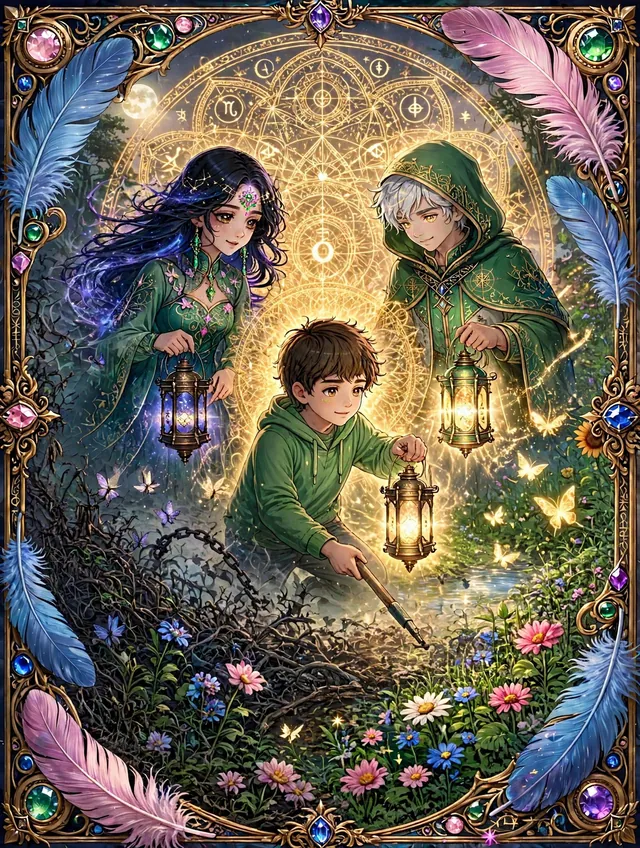
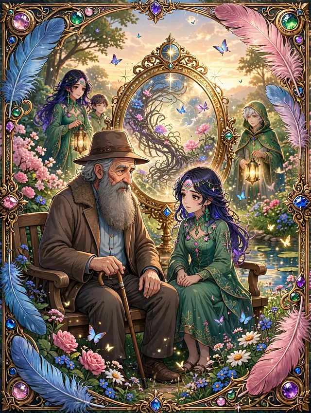
Callum como espejo — La figura terapéutica que permite revelar lo inconsciente.
04 / 05
El Ego y el Proceso de Sublimación
+ El Jardín como Símbolo de la Mente Consciente e Inconsciente
El ego, como la parte consciente y racional de la psique, juega un papel crucial en la toma de decisiones y la mediación entre los deseos primarios del ello y las restricciones impuestas por el superyó. En el relato, Aides, al encargarse de su jardín, ejerce control sobre las plantas y el espacio, lo que refleja su ego en acción.
El trabajo de restaurar el jardín puede verse como una forma de sublimación, donde Aides canaliza las emociones y los deseos reprimidos (simbolizados por la maleza) hacia un proceso productivo y constructivo, en lugar de mantenerlos reprimidos o destructivos. La sublimación es un proceso psíquico en el que los impulsos o deseos reprimidos se transforman en actividades socialmente aceptables o creativas.
El Ego y el Proceso de Sublimación / El Jardín como Símbolo de la Mente Consciente e Inconsciente — El ego en acción, canalizar lo reprimido hacia lo constructivo.
El jardín como símbolo
El jardín, a lo largo del relato, se presenta como una poderosa metáfora de la mente humana. En este espacio, lo visible y lo invisible se entrelazan: Las flores y plantas que Aides ha cultivado representan los pensamientos y sentimientos conscientes. La maleza que debe ser retirada refleja los aspectos inconscientes y reprimidos de su psique. A medida que Aides limpia y ordena su jardín, está en realidad organizando su mente: elimina lo que no sirve (la maleza) y cuida lo valioso (las plantas y flores).
05 / 05
El Proceso de Autoconocimiento y la Ventana de Johari
La Ventana de Johari es un modelo psicológico que representa la conciencia de uno mismo en relación con los demás. En el relato, podemos aplicar este modelo de la siguiente manera:
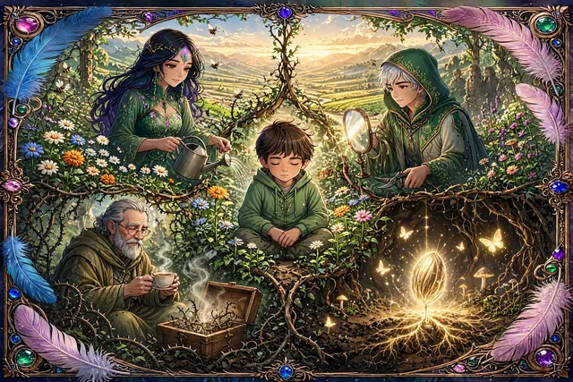
Autoconciencia — Expandir el área abierta para integrar lo desconocido.
Área Abierta
Lo conocido por Aides y por los demás: Su deseo de mejorar el jardín. Sus esfuerzos por cambiar su entorno.
Área Ciega
Lo que los demás ven en Aides, pero él no reconoce: Sus patrones inconscientes de evasión o miedo al cambio. La necesidad de apoyo externo para progresar (Callum como guía).
Área Oculta
Lo que Aides sabe de sí mismo, pero oculta a los demás: Sus miedos y ansiedades sobre su propio crecimiento. Los recuerdos reprimidos que emergen mientras trabaja en el jardín.
Área Desconocida
Lo que ni Aides ni los demás conocen aún: Su verdadero potencial tras la transformación. Las emociones profundas que podrían surgir al enfrentarse a su pasado.
A medida que Aides avanza en su proceso de restauración, su Área Abierta se expande, reduciendo su Área Ciega y descubriendo nuevos aspectos en su Área Desconocida. Este proceso es una metáfora del autoconocimiento y la autoaceptación, donde el individuo se vuelve más consciente de su verdadera naturaleza.
El relato de Aides y su jardín, como se presenta en el Gran Libro de Fábulas, es una rica metáfora de los procesos psíquicos y terapéuticos que subyacen en la vida humana. A través del trabajo de restaurar su jardín, Aides experimenta una transformación interior que refleja el proceso terapéutico, el autoconocimiento y el desarrollo de su identidad.
Este relato nos invita a reflexionar sobre la importancia de:
Integrar los aspectos conscientes e inconscientes de nuestra psique.
Enfrentar los deseos reprimidos y trabajar en su sublimación.
Reconocer el papel de la transferencia y el terapeuta en el proceso de sanación.
Aplicar modelos como la Ventana de Johari para ampliar nuestra autoconciencia.
Al final, el jardín, como la mente humana, puede ser restaurado y cultivado hacia la armonía y el equilibrio, en un proceso continuo de crecimiento y transformación.
VI · Prácticas profundas
Ejercicios de Psicoanálisis y Autoconocimiento
Prácticas para explorar el inconsciente
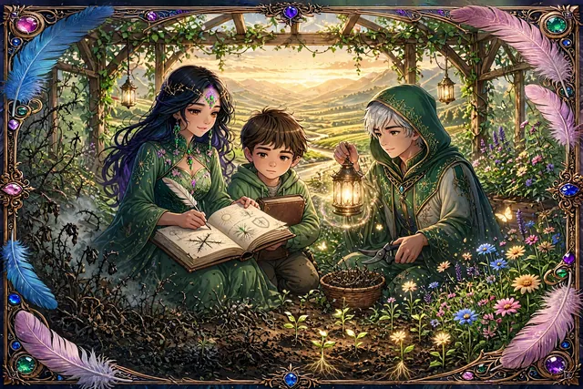
Exploración del inconsciente — El jardín interior
Ejercicio Psico 01
Exploración del Inconsciente – El Jardín de la Mente
🌱 Imagina tu mente como un jardín, un espacio donde florecen pensamientos, creencias y emociones. Algunas plantas son fuertes y vibrantes, mientras que otras pueden estar marchitas o cubiertas de maleza.
✍ Ejercicio
Escribe sobre el estado actual de tu jardín mental. ¿Predominan las flores del amor propio, la confianza y la serenidad? ¿O hay maleza de miedo, duda y resentimiento? Identifica qué pensamientos o emociones necesitas podar y cuáles deseas seguir cultivando.
💭 Reflexión
¿Qué pensamientos dominan tu mente? ¿Cómo puedes transformar lo negativo en crecimiento personal?
Diálogo interior — Ello como dragón rojo con zarzas oscuras, Yo mediador (Liam y Elara), Superyó como anciano luminoso con balanza dorada.
Ejercicio Psico 02
Diálogo entre el Yo, el Ello y el Superyó – El Jardín Interior
🧠 Dentro de ti conviven tres fuerzas:
El Ello: Instintivo y emocional, busca la satisfacción inmediata.
El Yo: Mediador entre los impulsos y la realidad.
El Superyó: La voz de la moral, los valores y la autocrítica.
✍ Ejercicio
Escribe un diálogo entre estas tres partes de ti. Reflexiona sobre una decisión reciente y deja que cada voz exprese su punto de vista.
💭 Reflexión
¿Quién domina en tu vida diaria? ¿Cómo puedes lograr un equilibrio sano entre deseo, razón y moral?
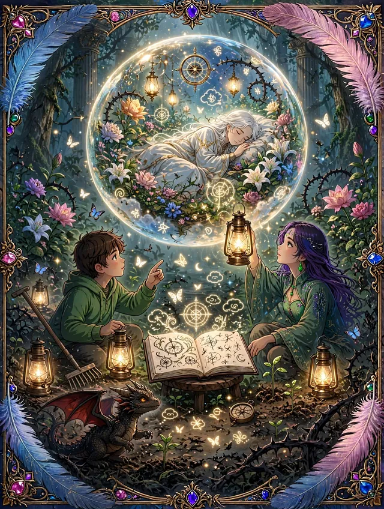
Ejercicio Psico 03
Interpretación de Sueños – Semillas Ocultas
🌙 Los sueños son semillas plantadas por el inconsciente, revelando emociones y deseos ocultos.
✍ Ejercicio
Escribe un sueño reciente con el mayor detalle posible. Analiza sus símbolos y emociones. ¿Qué mensajes te está enviando tu mente?
💭 Reflexión
¿Qué aspectos de tu vida refleja este sueño? ¿Qué “maleza” mental necesitas despejar?
Ejercicio Psico 04
Asociación Libre – Semillas en Tu Mente
💡 Tu mente almacena pensamientos que brotan sin control. Este ejercicio te ayudará a descubrir patrones inconscientes.
✍ Ejercicio
Escribe una lista de palabras que vengan a tu mente sin filtrar ni juzgar. Observa si hay temas recurrentes o emociones ocultas en ellas.
💭 Reflexión
¿Qué pensamientos están arraigados en tu mente? ¿Cómo puedes plantar ideas más positivas y transformadoras?
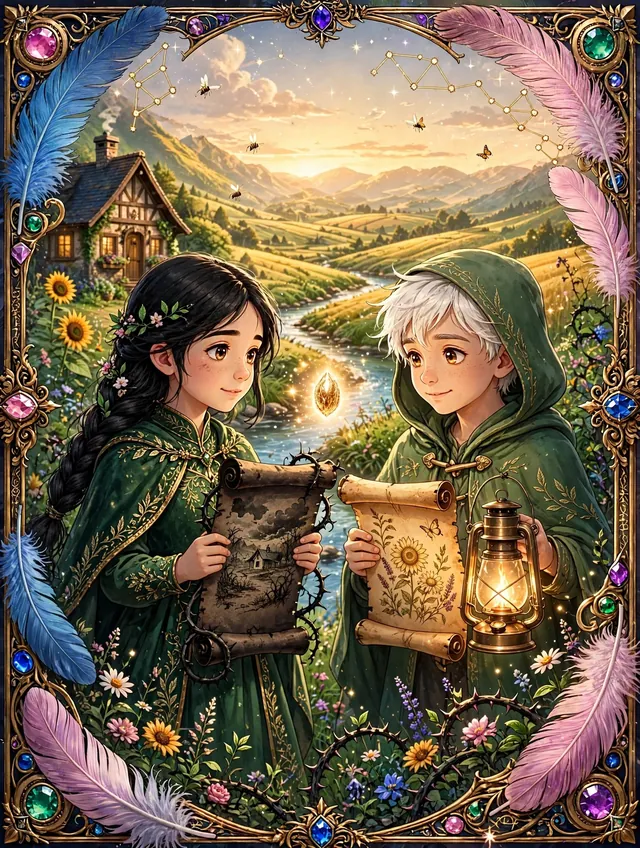
Ejercicio Psico 05
Reinterpretación de la Historia Personal – La Herencia de Tu Jardín
⏳ Nuestras experiencias pasadas influyen en la forma en que percibimos el presente.
✍ Ejercicio
Escribe sobre un evento importante de tu pasado. Luego, reescríbelo desde una perspectiva más compasiva y analítica.
💭 Reflexión
¿Cómo puedes transformar esta historia en una fuente de aprendizaje y crecimiento?
Ejercicio Psico 06
Proyección y Relaciones con los Demás – Reflejos en el Jardín
🪞 A veces, lo que nos molesta de los demás es un reflejo de aspectos no resueltos en nosotros mismos.
✍ Ejercicio
Reflexiona sobre alguien con quien tienes conflictos. Pregunta: ¿Estoy proyectando en esta persona algo que realmente pertenece a mí?
💭 Reflexión
¿Qué puedes aprender de este reflejo? ¿Cómo puedes integrar este conocimiento en tu crecimiento personal?
Ejercicio Psico 07
Cartas al Niño Interior – Semillas de Sanación
👶 Dentro de ti aún vive la versión infantil de ti mismo, con sus miedos, sueños y heridas.
✍ Ejercicio
Escribe una carta a tu niño interior, brindándole amor y comprensión. Luego, responde desde su perspectiva: ¿qué necesita decirte?
💭 Reflexión
¿Qué heridas de la infancia aún influyen en ti? ¿Cómo puedes sanar y fortalecer a tu niño interior?
Ejercicio Psico 08
Acción Consciente – Cuidar el Jardín Interior
🌞 Para que un jardín florezca, requiere cuidado diario.
✍ Ejercicio
Elige una acción diaria para nutrir tu bienestar (afirmaciones, gratitud, meditación). Registra cómo te hace sentir cada día.
💭 Reflexión
¿Cómo influye en tu estado mental el cuidar conscientemente de ti mismo?
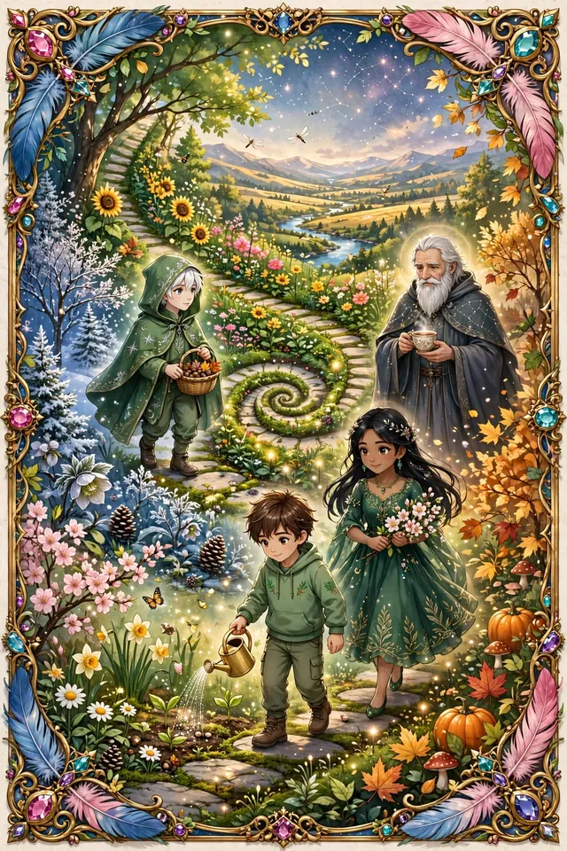
Ciclo en espiral — Las 4 estaciones del jardín interior: invierno, primavera, verano y otoño en transformación continua.
Ejercicio Psico 09
Transformación Continua – Mantén el Crecimiento Constante
🌿 El crecimiento personal es un proceso continuo, como un jardín que siempre necesita atención.
✍ Ejercicio
Crea un plan para seguir cultivando tu mente y emociones. Incluye hábitos, reflexiones y prácticas que nutran tu bienestar.
💭 Reflexión
¿Qué nuevas prácticas puedes incorporar para mantener tu jardín mental floreciente?
✦
“Cultiva cada día una semilla nueva, y tu jardín interior nunca dejará de florecer.”
El jardín, como la mente humana, puede ser restaurado y cultivado hacia la armonía y el equilibrio, en un proceso continuo de crecimiento y transformación.